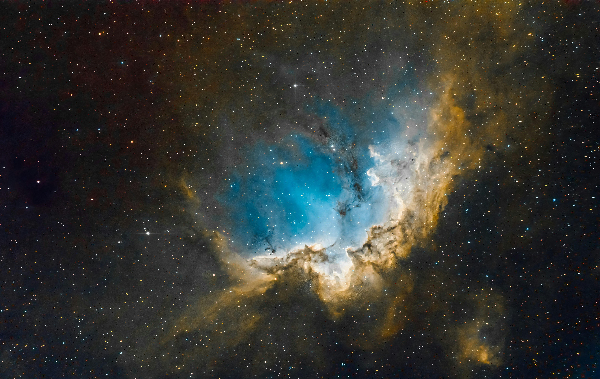

A nebula is a giant cloud of dust and gas in space. Some nebulae come from the gas and dust thrown out by the explosion of a dying star, such as a supernova. Other nebulae are regions where new stars are beginning to form. For this reason, some nebulae are called "star nurseries."

Galaxies consist of stars, planets, and vast clouds of gas and dust, all bound together by gravity. The largest contain trillions of stars and can be more than a million light-years across. The smallest can contain a few thousand stars and span just a few hundred light-years.

A black hole is a region in space where the pulling force of gravity is so strong that light is not able to escape. The strong gravity occurs because matter has been pressed into a tiny space. This compression can take place at the end of a star's life. Some black holes are a result of dying stars.